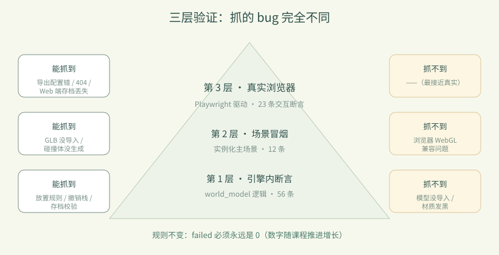
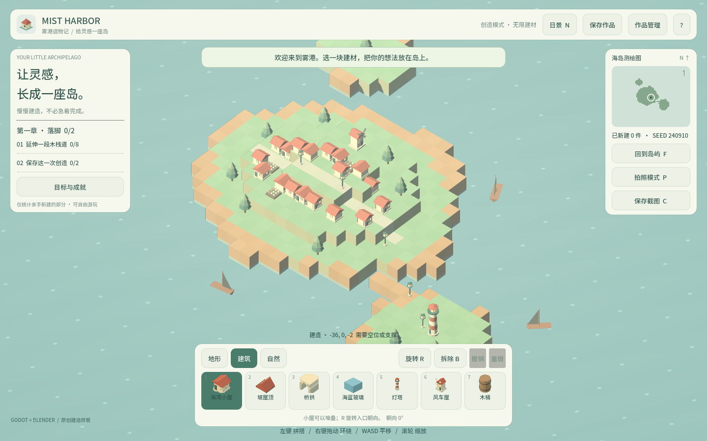
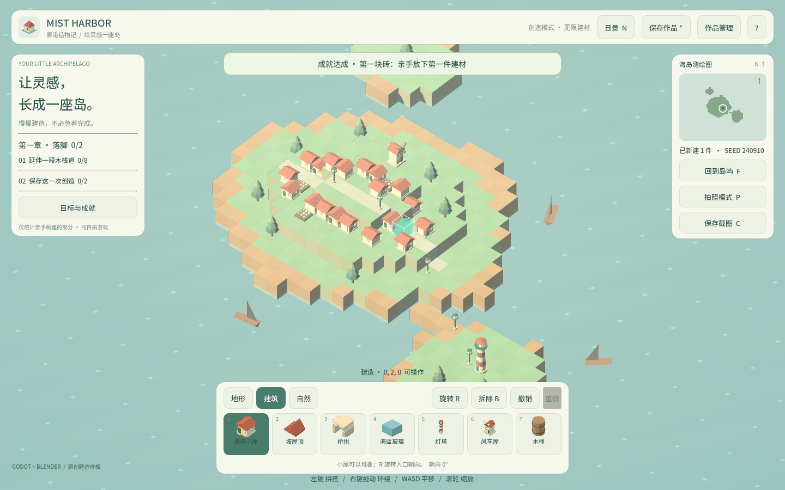

卷 0 · 第 01 章 先让它跑起来
本章目标：20 分钟内，在本机得到一个真正能玩的《雾港造物记》，并且用它自带的测试
证明"它不是我看着像能跑，而是真的能跑"。
对应任务：T01 / T03 | 对应提交：c461437（工程基线）
1.1 为什么第一件事是"跑起来"，而不是"学概念"
游戏开发最容易骗人的地方在于：它几乎总能"看起来能跑"。
一个空场景也能打开，一个报错的脚本也可能只是静静躺在日志里。所以本实训的第一课不是概念，
而是建立一条可验证的基线——后面所有改动，都以"这条基线还绿不绿"作为唯一裁判。
这条基线长这样：
WORLD_TEST_RESULT passed=56 failed=0
SCENE_SMOKE_RESULT failed=0第一行是世界模型的 56 条断言（放置、撤销、存档校验、边界……），
第二行是"真的把主场景实例化出来点了几下"的 12 条冒烟。
关于数字：本章写作时仓库里是 56 条；工程早期曾是 42 条，后面还会更多。
不要记数字，记规则：failed 必须永远是 0。 数字增长只说明保护变厚了。
📌 本实训约定：任何一次改动之后，
failed不是 0 就不许往下走。这不是洁癖，
是让 48 个任务能叠成一栋楼而不是一堆沙的唯一办法。
1.2 准备：三样东西
| 需要 | 怎么确认 | 不对怎么办 |
|---|---|---|
| --- | --- | --- |
| Godot 4.7.stable | & D:\Godot_v4.7\Godot_v4.7-stable_win64_console.exe --version | 改 .codebuddy/local/tools.json |
| Python 3.11+ | python --version | 装 Python；注意别用坏的 C:\Python311 |
| Node 18+ | node -v | 装 Node LTS |
引擎路径只住在一个地方——.codebuddy/local/tools.json：
{ "godot": "D:/Godot_v4.7/Godot_v4.7-stable_win64_console.exe",
"blender": "D:/Blender/blender-4.2.0-windows-x64/blender.exe" }这个文件被 git 故意忽略（它是"你这台机器"的信息，不是工程信息）。
换机器时从 tools/tools.example.json 复制一份改路径即可——这就是为什么仓库里要有模板文件。
⚠️ 常见坑：
Python 3.11装在C:\Python311\python.exe但那个解释器已经损坏，
执行任何脚本都会报"无法创建进程"。用python --version先确认你调的是哪一个。
🌩 在云端 agent（web-cb）里是什么样
本实训的正式运行环境是云端 agent（web-cb）：它会按每个 PBL 项目的需要，在云端预先准备好
MCP 服务、skill、托管平台，甚至基础代码仓库。也就是说——
| 🖥 本地路线（可选：离线、可改引擎） | 🌩 云端 agent（web-cb，默认） | |
|---|---|---|
| --- | --- | --- |
| Godot / Blender | 自己装，路径写进 .codebuddy/local/tools.json | 平台镜像内置，开箱即用 |
| 两套 MCP | 自己改用户级 mcp.json（见第 02 章） | 平台预置，学员无需配置 |
| 代码仓库 | 自己 git clone | 平台按项目预建基础仓库 |
| 跑测试 | python tools/dev.py test | 同一条命令（统一入口） |
| 看画面 | python tools/dev.py run | 云端提供预览入口，同样由 dev.py 驱动 |
所以云端里你不需要处理本节的"三样东西"，但必须知道它们是什么：
出问题时才能判断是"平台环境没起来"还是"我的代码改坏了"。
📌 两条路线共用同一套命令入口（
tools/dev.py），这正是本实训把它当唯一入口的原因：
换环境不换命令。
1.3 动手：三条命令
# 1) 取代码（如果你还没取）
git clone https://github.com/oceancolor/Mist_Harbor.git
cd Mist_Harbor
# 2) 跑基线（这一步会导入资源并跑两套测试，约 1 分钟）
python tools/dev.py test
# 3) 打开游戏
python tools/dev.py run第 2 步你会看到 Godot 以无头模式启动、扫描资源、然后 PASS 一条条刷出来。
最后两行是裁判：
WORLD_TEST_RESULT passed=56 failed=0
SCENE_SMOKE_RESULT failed=0第 3 步会出现游戏窗口：一座被薄雾包着的小岛，几间红顶小屋、灯塔、风车和栈桥。
🤖 让 Agent 帮你做这一步
把下面这段直接贴给 CodeBuddy：
帮我在这台机器上跑通《雾港造物记》的基线：
1. 确认 Godot 4.7 在 D:\Godot_v4.7、Python 3.11+、Node 18+ 可用；
2. 执行 python tools/dev.py test，把最后两行结果贴给我；
3. 如果失败，读 logs/ 下的日志定位原因，先告诉我原因再动手改；
4. 通过后执行 python tools/dev.py run 启动游戏，并说明窗口里应该看到什么。
约束：不要为了让测试变绿而删除或放宽任何断言。最后那句"约束"很重要。Agent 很擅长让测试变绿——包括把测试删掉。
你必须明确告诉它：断言是契约，不是障碍。
1.4 玩五分钟：确认它不是张图片
新手最容易犯的错，是"看到画面就以为成了"。请用下面这张清单确认它真在跑：
- [ ] 左侧建材栏点一间「海湾小屋」，然后在岛上点一下 → 小屋真的出现了
- [ ] 按
R→ 下一件建材的朝向变成 90° - [ ] 按
Ctrl+Z→ 刚才放的小屋消失；Ctrl+Y又回来 - [ ] 按
B进入拆除模式，点一下方块 → 它消失 - [ ] 按
N→ 昼夜切换；再按一次切回 - [ ] 右键拖动 → 相机环绕；滚轮 → 缩放
- [ ] 按
P→ 界面隐藏（拍照模式）；Esc→ 回来
这七条对应的是真实的世界状态变化，不是 UI 开关。本实训后面每一章讲的机制，
最终都要落到"点了之后世界真的变了"这一条上。
1.5 理解你刚才跑的两套测试
project/tests/test_world.gd 纯逻辑：不渲染，直接测世界模型
project/tests/smoke_scene.gd 真渲染：实例化 main.tscn，真的点几下
project/tests/browser_smoke.py 真浏览器：Web 导出后由 Playwright 驱动（第 3 层）为什么要分三层？因为它们抓的 bug 完全不同：
| 层 | 能抓到 | 抓不到 |
|---|---|---|
| --- | --- | --- |
| 逻辑断言 | 放置规则错、存档校验漏、撤销栈坏 | 模型没导入、材质发黑 |
| 场景冒烟 | GLB 没导入、碰撞体没生成、UI 回调没接 | 浏览器里的 WebGL 兼容问题 |
| 真实浏览器 | 导出配置错、资源路径 404、Web 端存档丢失 | —— |

卷 6 会专门讲这套体系怎么搭起来。现在你只要记住：python tools/dev.py test 是你的安全带，任何时候都可以拉一下。
1.6 常见坑速查（本章）
| 现象 | 原因 | 处理 |
|---|---|---|
| --- | --- | --- |
Godot not found | tools.json 路径不对 | 改文件，或用 --godot 覆盖 |
| 测试卡住不动 | 上一次的 Godot 进程没退 | 关掉残留进程再跑 |
SCRIPT ERROR: Parse Error | GDScript 类型推断告警被当错误 | 给变量写显式类型（如 var x: String = ...） |
日志里出现 index.png 扫描 | 导出产物在工程目录内 | 见 T33：导出目录移到仓库根 |
| 中文显示成方框 | 子集字体缺字 | 见 T28：跑 build_font_corpus.py |
1.7 本章作业
- 跑通基线，把两条
RESULT贴到你的笔记里（要带数字，例如passed=56 failed=0） - 用上面的"玩五分钟"清单逐条打勾
- 故意制造一次失败：随便改坏
project/data/palette.json里一个字段，
再跑测试，观察它是怎么被抓出来的——然后 git checkout 还原
- 记下你机器上
python --version与 Godot 路径，填进.codebuddy/local/tools.json
作业 3 是本章最重要的一条。只有见过测试失败的样子，你才会相信测试通过的意义。
🖼 本章图集


📹 录屏分镜（8 分 30 秒）
| 时间 | 画面 | 解说词要点 |
|---|---|---|
| --- | --- | --- |
| 00:00–00:40 | 封面 + 成品游戏画面（岛上日落） | "这一课结束，你电脑上就会跑着这个游戏。" |
| 00:40–01:50 | 命令行执行 python --version / node -v / Godot --version | "先确认三件事，别急着写代码。" |
| 01:50–02:30 | 打开 tools.json，讲解为什么它被 gitignore | "机器信息和工程信息要分开。" |
| 02:30–04:10 | python tools/dev.py test 全屏录，PASS 刷屏 | "看这两行，它们是后面所有章节的裁判。" |
| 04:10–05:30 | 启动游戏，逐条演示"玩五分钟"清单 | "点了以后世界真的变了，才算数。" |
| 05:30–06:40 | 故意改坏 palette.json → 测试变红 → 还原 | "见过它失败，你才会相信它通过。" |
| 06:40–07:40 | 讲三层测试的表格 | "逻辑、场景、浏览器，抓的 bug 不一样。" |
| 07:40–08:30 | 布置作业 + 下集预告（远程 Blender 造第一个模型） | "下一课，我们让 AI 帮你在云端捏出第一个模型。" |
字幕关键词：Godot 4.7 · 基线 · 断言 · failed=0 · 三层测试 · 子集字体
🎬 视频位（待录制）
把录好的视频放到course/media/video/01/（mp4 / webm / mov），重新执行 python tools/course_build.py 即会自动内嵌；首帧默认用本章第一张截图作为封面。分镜脚本见上一节。🎓 教学提示（给教师 / 直播主）
- 本章唯一必须让学生带走的东西：
failed=0是裁判，不是装饰。 - 课堂演示顺序：先跑测试（绿）→ 故意改坏 → 测试变红 → 还原。先见失败，才信通过。
- 常见误解纠正：学生常把"游戏窗口打开了"当成验收通过。用本章 1.4 的七条清单当场打脸。
- 分层教学：零基础班可跳过 1.5（三层测试原理），直接做 1.3 与 1.4；有基础班要求讲清三层差异。
- 批改要点：作业 1 必须贴带数字的 RESULT 行；只写"测试通过了"不给分。
🖼 配图清单
| 文件名 | 内容 | 生成方式 |
|---|---|---|
| --- | --- | --- |
01-console-baseline.png | 测试跑完的终端输出（含两行 RESULT） | 手动截（终端） |
01-game-first-run.png | 游戏首屏全景 | python tools/course_capture.py --chapter 01 |
01-place-and-undo.png | 放置一间小屋后的画面 | 同上 |
01-test-fails.png | 故意改坏后的红色失败输出 | 手动截（终端） |
自动产出见 course/media/shots.json（拍摄脚本）与 tools/course_capture.py。
🎥 直播脚本（L1 精简版，15 分钟片段）
- 开场（2 min）：现场投票"你觉得这台机器上第一条测试会不会过？"——90% 的人会猜错
- 演示（6 min）：按本章 1.3 顺序跑一遍，中途故意用错 Python 版本让大家看报错
- 互动（4 min）：让观众在聊天区报自己的
passed=数字，收集不同环境 - 收尾（3 min）：布置作业，预告下一场的"云端建模"
❓ 本章 FAQ
Q：我的是 macOS / Linux，命令不一样吗？
A：只差路径分隔符和 python→python3。tools/dev.py 本身是跨平台的。
Q：测试数字和书上不一样（比如 56 而不是 42）正常吗？
A：正常，本实训后面会不断加断言。只要 failed=0，数字越大说明保护越厚。
Q：可以跳过测试直接开发吗？
A：可以，但你会发现第 5 次改动之后就不知道是谁弄坏的了。这条安全带是给自己留的。